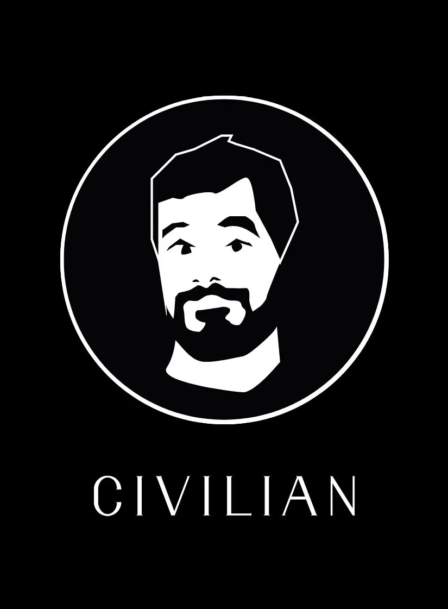
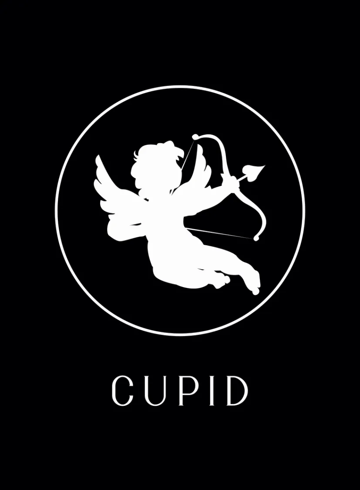
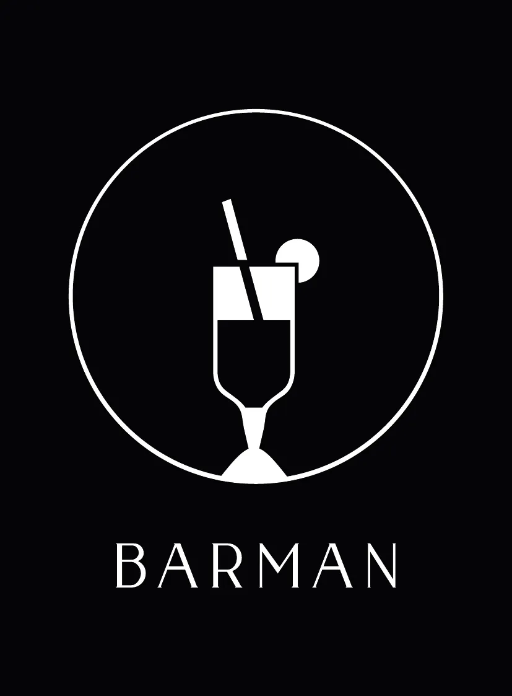
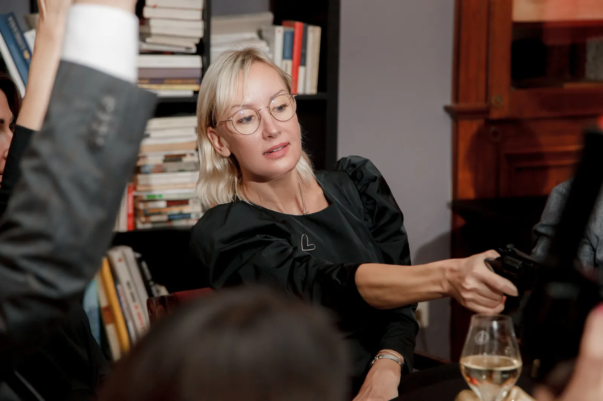
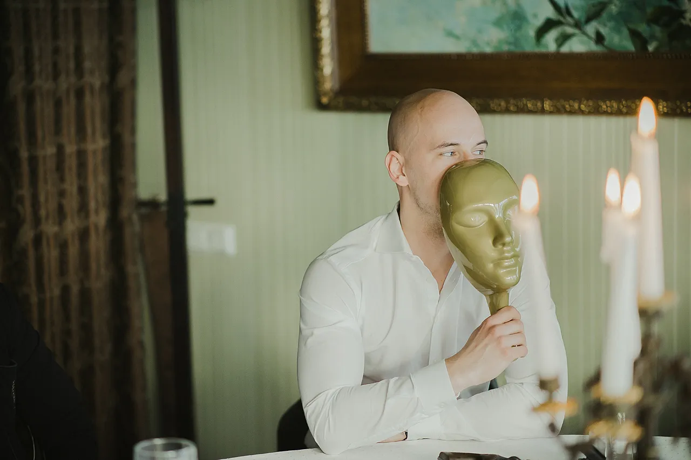
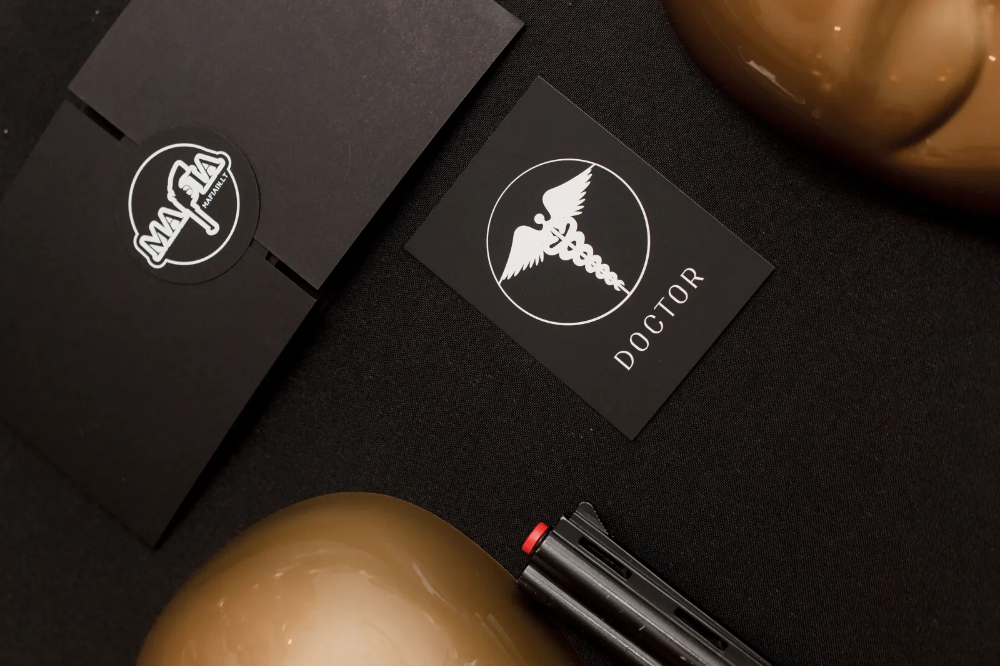
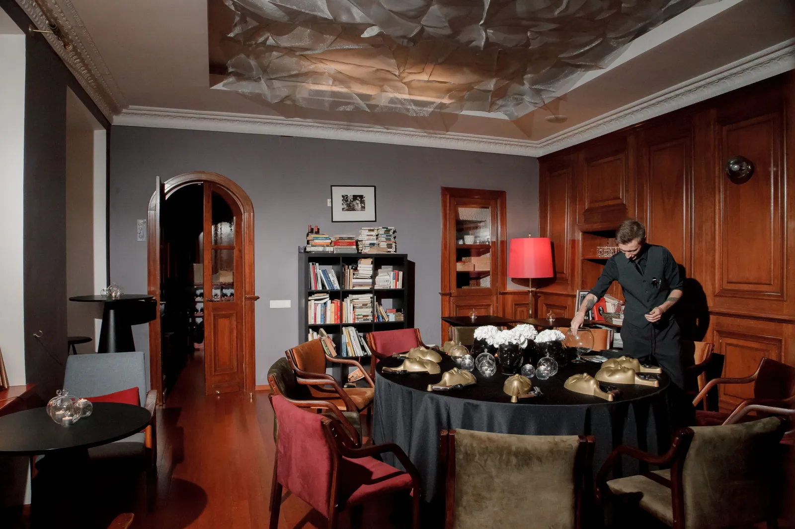
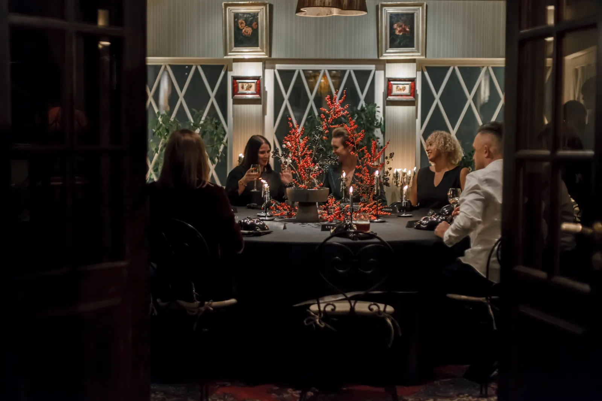

Vienuolikos klubo gyvavimo metų begyje transformavosi viskas: taisyklės, žaidimo fazės, personažai ir net pagrindinis žaidimo akcentas — tai, dėl ko apskritai susėdame prie stalo. Visa tai palaipsniui įgavo vis daugiau autorinio braižo.
Žemiau surasite pilną instrukciją: kaip organizuoti žaidimą, kokius personažus įtraukti ir kiek jis truks. Taip pat pasidalinsiu vedėjo klaidomis ir papasakosiu, kaip išlaikyti žaidimo dinamiką.
Žaidimo principas
Sesijos pradžioje kiekvienas dalyvis slapta gauna kortelę su savo vaidmeniu — pavyzdžiui, voke. Vokuose visada yra Mafija (neigiami personažai) ir Taikieji (teigiami personažai).
Jei atsidūrėte Mafijos pusėje, jūsų tikslas — eliminuoti visus taikiuosius ir padaryti tai taip, kad niekas jūsų neįtartų. Jei esate taikusis, jūsų užduotis — išsiaiškinti, kas yra Mafijozai, ir eliminuoti juos bendro balsavimo metu.
Žaidimas tęsiasi tol, kol viena iš pusių visiškai eliminuojama. Lygiųjų nebūna.
Baziniai personažai autoriniame pavidale

Mafija. Naktį Mafija atsibunda ir kartu nusprendžia, kas bus eliminuotas — dažniausiai susikalbėdami žvilgsniais arba pirštais. Skirtingai nei įprastose taisyklėse, kur yra pagrindinis mafijos narys — Donas, mūsų versijoje visa Mafija yra lygiavertė.
Daktaras. Naktį atsibunda ir bando atspėti, į kurį žaidėją galėjo nusitaikyti Mafija. Jei jis nurodo tą patį kandidatą, visi lieka gyvi. Daktaras gali gydyti pats save, tačiau negali gydyti to paties žmogaus dvi naktis iš eilės.
Šerifas. Naktį atsibunda ir patikrina vieną žaidėją. Vedėjas jam parodo tik statusą — taikusis arba Mafija. Konkretaus taikiojo vaidmens jis neįvardija ir nerodo.
Taikieji. Naktį jie miega. Pagrindinis jų įrankis — dienos balsavimas.
Mūsų klubo personažai


Advokatas. Naktį jis neturi jokios funkcijos, tačiau dieną, balsavimo metu, jei du ar daugiau žaidėjų surenka vienodą balsų skaičių, būtent Advokatas nusprendžia, kurį iš jų apginti, o kurį eliminuoti.
Kupidonas. Dar prieš prasidedant pirmajam raundui Kupidonas paskiria du įsimylėjėlius. Jis gali paskirti ir save. Įsimylėjėliai susipažįsta tarpusavyje, tačiau savo vaidmenų vienas kitam neatskleidžia.
Jei vienas iš jų eliminuojamas, pagal žaidimo legendą antrojo širdis neatlaiko — jis išeina paskui pirmąjį. Taip galima iš karto netekti dviejų taikiųjų.
O jeigu Kupidonas netyčia vienu iš įsimylėjėlių paskiria Mafijos narį, atsiranda visai kita situacija. Antrasis įsimylėjėlis, net nežinodamas, kad jo partneris yra mafija, bandys jį ginti. O jei vis dėlto sužinos, prieš jį atsivers pasirinkimas: aukoti save arba ieškoti ekologiškesnio sprendimo.
Įprasta logika tokioje situacijoje nebeveiks. Atsiras vietos žmogiškajam faktoriui ir emocijoms, kuriomis, greičiausiai, ir bus grindžiamas sprendimas. Tai sukuria naujus žaidimo scenarijus.
Barmenas. Vieną kartą per žaidimą, naktį, gali „prigirdyti“ vieną žaidėją. Pagal žaidimo legendą šis tada atskleidžia savo tikrąjį vaidmenį.
Todėl Barmenui verta taikyti arba į Šerifą, kad vėliau galėtų veikti kartu su juo, arba į Mafijos narį, kad kuo anksčiau ištrauktų jį į dienos šviesą.
Riteris. Vieną kartą per visą žaidimą, jei naktį į Riterį nusitaiko Mafija, šarvai apsaugo jį nuo eliminacijos. Jei Mafija nusitaiko antrą kartą, teoriškai Riteris jau turėtų būti eliminuotas.
Tačiau jei per antrą naktį Riterį pagydo Daktaras, Mafija gali būti smarkiai išmušta iš pusiausvyros.
Vanga. Jos funkciją keičiu priklausomai nuo situacijos. Vienas iš variantų — naktį ji pasirenka žaidėją, kurio balsas dienos balsavimo metu bus anuliuotas.
Šį personažą galima įtraukti žaidžiant su labiau patyrusiais žaidėjais. Priešingu atveju, ypač su naujokais, Vanga, nors pati yra taikioji, gali visiškai netyčia sužaisti prieš savuosius.
Žaidimo fazės
Diena
- Išdalijame vaidmenis.
- Prisistatome eilės tvarka. Kiekvienas papasakoja išgalvotą istoriją apie save, neužsimindamas apie tai, kas iš tiesų yra, ir tuo pačiu stebėdamas, ką pats jaučia.
- Įtarimų ratas. Eilės tvarka pasakojame, kas kelia įtarimą, o kuo pasitikime.
- Laisva diskusija, be eiliškumo. Laikas apsispręsti, į ką šauti.
- Balsavimas. Visi vienu metu pakelia revolverį į viršų – namų sąlygomis tiesiog ranką. Vedėjui suskaičiavus iki trijų, nuleidžia ją ir nukreipia į žaidėją, kurį nori eliminuoti.
- Daugiausia balsų gavęs žaidėjas iškrenta. Jei jis buvo taikusis, galima suteikti jam paskutinį žodį. Jei tai buvo Mafijos narys, palydime jį nuo stalo ir pradedame naktį.

Naktis
- Visi užsideda kaukes, pagarsiname muziką.
- Pažadiname Mafiją, padedame jos nariams pamatyti vieniems kitus ir paklausiame, ką jie nori eliminuoti.
- Pažadiname Daktarą, paklausiame, ką jis nori išgydyti ir į ką, jo manymu, galėjo šauti Mafija.
- Pažadiname Šerifą, paklausiame, ką jis nori patikrinti ir kas jam atrodo įtartinas.
- Pažadiname Advokatą – susipažinimui.
- Pažadiname miestą ir skelbiame, kad kaukes galima nusiimti.

Kiek žaidėjų ir kaip paskirstyti vaidmenis
Vertinant žaidimo dinamiką, dešimt dalyvių – optimalus skaičius. Mažesnei grupei svarbu atsižvelgti į toliau aprašytus situacinius niuansus, o didesnėje kyla rizika, kad žaidimas dalyviams tiesiog pabos.
10 žaidėjų: 3 Mafijos, 1 Daktaras, 1 Šerifas, 1 Advokatas ir 4 įprasti taikieji. Jei Mafija laimi sausai, galima pridėti Riterį. Jei spaudžia laikas, bet norisi dar spėti sužaisti vieną sesiją, galima pridėti Kupidoną.
9 žaidėjai: galimi trys variantai:
- 2 mafijos, Daktaras, Šerifas, Advokatas ir 4 įprasti taikieji — jei žaidėjai patyrę;
- 3 mafijos, Daktaras, Šerifas, Advokatas ir 3 įprasti taikieji — jei norisi daugiau dinamikos;
- 3 mafijos, Daktaras, Šerifas, Advokatas, Barmenas ir 2 įprasti taikieji.
Žaidžiant devyniese su trimis mafijos nariais, svarbu padrąsinti svečius veikti ryžtingai ir per ilgai nesėdėti šešėlyje: svarbu žaisti drąsiai, net ir rizikuojant būti eliminuotam Mafijos. Kitaip Mafija greitai įgis persvarą.
7–8 žaidėjai: 2 mafijos, 1 Daktaras, 1 Advokatas, 3–4 taikieji. Jei grupė nepatyrusi, verta pridėti ir Šerifą. Patyrusiems žaidėjams jo geriau neįtraukti.
Šiame išdėstyme Advokatas yra ypač vertingas ir gali išgelbėti žaidimą, likus vienam prieš vieną.
6 žaidėjai: žaidimo su šešiais dalyviais paprastai nerengiu, tačiau susidarius tokiai situacijai, rekomenduoju šį vaidmenų derinį: 1 Mafija, 1 Daktaras, 1 Kupidonas ir 3 taikieji. Šerifas suteiktų taikiesiems pernelyg didelį pranašumą, o Kupidonas tokiame išdėstyme, nors ir veiktų taikiųjų pusėje, labiau pasitarnautų Mafijai.
| Žaidėjų | Mafija | Daktaras | Šerifas | Advokatas | Ypatingi | Taikieji |
|---|---|---|---|---|---|---|
| 10 | 3 | 1 | 1 | 1 | — | 4 |
| 9 | 2–3 | 1 | 1 | 1 | Barmenas, jei 3 mafijos | 2–4 |
| 7–8 | 2 | 1 | nepatyrusiems | 1 | — | 2–4 |
| 6 | 1 | 1 | — | — | Kupidonas | 3 |
Sesijų trukmė
Žaidimas nenuspėjamas — pavyzdžiui, jei Daktarui pasiseka, sesija gali pailgėti trimis–septyniomis minutėmis. Tačiau statistiškai dažniausiai galima tikėtis maždaug tokios trukmės:
| Žaidėjų | Trukmė |
|---|---|
| 10 | apie 40 minučių |
| 8–9 | 30–35 minutės |
| 7 | 15–25 minutės |
| 6 | 5–20 minučių |
Taisyklėms paaiškinti verta skirti dvidešimt minučių.
Žaidimo atributika
Namų variantui pakanka paprastos kortų kaladės — naktį veidą galima užsidengti rankomis — taip pat rašiklio ir popieriaus lapo vedėjui.
O jei norėtųsi estetiško malonumo, verta pasirūpinti dešimčia kaukių, dešimčia metalinių revolverių, kad būtų juntamas jų svoris, dešimčia vokų, dešimčia personažų kortelių, žvakėmis su žvakidėmis, staltiese, apvaliu stalu ir kėdėmis.

Vedėjui taip pat reikės rašiklio, pagrindo šablonui ir šablono su laukeliais „kas yra Mafija“, „kas yra Šerifas“, „kas yra Daktaras“, „kas yra Advokatas“, taip pat „į ką šauna Mafija“ ir „ką gydo Daktaras“. Būtinas ir atskiras popieriaus lapas, kuriuo dieną uždengiamas šablonas, kad dalyviai netyčia nepamatytų slaptos informacijos.
O jei svečių daugiau nei dešimt?
Viskas priklauso nuo vakaro formato. Jei norisi jaukumo ir šiltesnės atmosferos, pakanka vieno stalo ir vieno vedėjo – žaisti gali nuo 8 iki 30 dalyvių. Jei tai įmonės vakaras su daugiau nei 30 dalyvių, prireiks dviejų stalų ir dviejų vedėjų.

Optimalu per vakarą surengti tris sesijas, kiekvienoje po dešimt žaidėjų. Jei iš viso yra dešimt svečių, kiekvienas sužais tris kartus, o jei trisdešimt – po vieną kartą.
Per pirmąją partiją likę dalyviai stebi žaidimą iš šalies ir, sprendžiant iš svečių atsiliepimų, dažniausiai tuo taip pat mėgaujasi. Antroje partijoje prie žaidimo prisijungia dar nežaidę dalyviai ir pirmieji eliminuoti žaidėjai. Trečios partijos sudėtį galima parinkti pagal situaciją ir dalyvių norą.
Keli patarimai pirmą kartą žaidžiantiems
Nesistenkite visko perprasti iš karto. Atsipalaiduokite, tegul „įsitempia“ vedėjas.
Jus gali eliminuoti ir dėl aktyvumo, ir dėl pasyvumo. Tai tik žaidimas – atraskite savo stilių ir nebijokite eksperimentuoti.
Nepasiduokite nė sekundei. Dešimtis kartų teko matyti, kaip dauguma įtaria vieną žmogų, tačiau balsuoja prieš kitą.
Atminkite, kad žaidimas turi suvienyti. Gerbkite kitus dalyvius ir niekada neperkelkite žaidimo į asmeniškumus — tokioje taktikoje nėra jokio orumo.
Jei nieko nebesuprantate ir pasimetėte — įsiklausykite į savo jausmus, ypač į tai, ką jaučia kūnas. Kūnas niekada nemeluoja. Ir jei jums pasidaro nejauku, kai kalba vienas iš dalyvių, gali būti, kad jūsų kūnas taip reaguoja į melą ar manipuliaciją.
Vedėjo klaidos
Kategoriškumas
Kaip atrodo: vedėjas griežtai laikosi nustatytų taisyklių ir baudžia žaidėjus už netyčinį jų pažeidimą.
Kas dėl to nutinka: svečiai įsitempia, gali atsirasti baimė suklysti, gali net nutrūkti emocinis ryšys tarp dalyvių.
Kaip geriau: svarbu nepamiršti, kad žaidimo esmė – kokybiškai praleisti laiką kartu, pasilinksminti, apsikeisti energija ir galbūt net šiek tiek geriau pažinti save bei kitus dalyvius. Būtinas lankstumas.
Sprendimus reikėtų priimti atsižvelgiant į konkrečią situaciją: į dalyvių pasirengimą, amžių, įsitraukimą ir net susitikimo progą. Jei tai šešiasdešimties žmonių įmonės renginys – svarbu išlaikyti dinamiką, pasitelkiant švelnią discipliną. Jei tai penkiolikos artimų draugų privatus susitikimas – svarbiau jaukiai praleisti laiką.
Kiekvienoje situacijoje griežtai laikytis taisyklių retai pasiteisina. Mūsų žaidimo formate vedėjas turėtų atlikti koordinatoriaus (žmogaus, kuris gali padėti susiorientuoti) funkciją, bet tikrai ne pagrindinio atlikėjo pozicijos.
Balso kryptis nakties fazėje
Kaip atrodo: vedėjas, iš anksto žinodamas, kurioje stalo pusėje sėdi Mafija ar Daktaras, kreipiasi būtent į tą pusę.
Kas dėl to nutinka: dalyviai gali nuspėti, kurioje pusėje yra vienas ar kitas personažas.
Kaip geriau: kalbėti žiūrint į lubas.
Niuansas: kai kurie žaidėjai gali panaudoti šį argumentą kaip žaidimo taktiką, net jei vedėjas viską daro tinkamai. Tokiu atveju svarbu nepriimti to asmeniškai ir išlaikyti neutralumą – tai yra žaidimo dalis, ir šiuo atvėju jus (vedėją) naudoja, kai manipuliacijos įrankį.
Perteklinė informacija
Kaip atrodo: vedėjas pasako, jog Mafija šovė žaidėją Joną, nors Daktaras išgelbėjo šį žaidėją ir niekas nemirė.
Kas dėl to nutinka: Kritiškai mąstantys žaidėjai turėtų suprasti, jog Jonas yra taikus, taip suteikiamas pranašumas visiems, žaidžiantiems prieš Mafiją.
Kaip geriau: pasakyti, kad šią naktį įvyko susišaudymas, tačiau niekas nenukentėjo. O toliau žaidėjai, remdamiesi žaidimo logika ir turimais vaidmenimis, gali patys suprasti: arba suveikė Daktaras, arba Mafija šovė į Riterį.
Ankstyvas žaidimo užbaigimas
Kaip atrodo: kai taikiųjų ir Mafijos skaičius tampa vienodas, vedėjas užbaigia žaidimą.
Kas dėl to nutinka: prarandama dalis emocijų, dėl kurių žaidžiame.
Kaip geriau: palikti vietos žmogiškajam faktoriui – Mafija dėl jaudulio ar noro sukurti intrigą gali eliminuoti savąjį narį. Svarbu žinoti, kurie taikiųjų vaidmenys dar žaidime – Advokatas ar Daktaras gali iš esmės pakeisti žaidimo eigą.
Kitaip tariant, nereikėtų remtis vien matematika ir logika. Visada reikia palikti žmonėms galimybę sužaisti savaip – jų žaidimas nebūtinai turi būti logiškas. Veikiau priešingai.
Per didelis įsitraukimas arba per didelė distancija
Kaip atrodo: vedėjas bando iš žaidimo išspausti norimą kokybę, nors dalyviai žaidžia pirmą kartą. Arba priešingai – vedėjas lieka labai nuošalyje ir visiškai nesikiša net tada, kai žaidėjai pasimeta.
Kas dėl to nutinka: dalyviai gali pajusti įtampą dėl to, kad žaidžia nepakankamai gerai, arba prarasti jaukumo jausmą.
Kaip geriau: leisti svečiams žaisti taip, kaip jiems išeina, ypač pirmą kartą. Jei reikia, galima juos atsargiai nukreipti klausimais arba priminti, į ką verta atkreipti dėmesį konkrečioje žaidimo fazėje.
Perkrauti taisyklėmis dar nepradėjus žaidimo
Kaip atrodo: bandymas paaiškinti kiekvieną įmanomą niuansą ir visas galimas įvykių eigas.
Kas dėl to nutinka: žmogaus protas įsitempia, dalyviai išvargsta bandydami viską įsiminti.
Kaip geriau: iš anksto pasakyti svečiams, kad jiems nebūtina visko įsiminti ir kad prireikus viską pakartosite tuo žaidimo metu, kai to reikės. Pradžioje paaiškinti pagrindinę žaidimo koncepciją ir įvykių chronologiją, į detales nesileisti.
Eliminuoti žaidėjai lieka prie stalo
Kaip atrodo: vedėjas neišlydi eliminuotų žaidėjų.
Kas dėl to nutinka: likę žaidėjai gali pasimesti, o eliminuotiems žaidėjams sunku išbūti tyloje ir neįsitraukti į žaidimą.
Kaip geriau: jei žaidėjas buvo taikusis ir buvo eliminuotas, suteikti jam teisę tarti paskutinį žodį, padėkoti už žaidimą ir palydėti nuo stalo.
Tyla
Kaip atrodo: stalas nutilo, kažkas jaudinasi, kad jam teko Mafijos vaidmuo, kažkas nežino, ką pasakyti, kažkas drovisi.
Kas dėl to nutinka: iš esmės niekas. Kartais net naudinga leisti pabūti tyloje – joje lengviau susitelkti į savo vidinius pojūčius. Tačiau svarbu atskirti sąmoningą tylą nuo nejaukumo, kylančio iš nežinojimo.
Kaip geriau: neinterpretuoti to, kas vyksta. Bet kurią pauzę galima išnaudoti – pavyzdžiui, atkreipti dėmesį į fizinius pojūčius ir į tai, ką jie gali reikšti. Arba tarsi tarp kitko paklausti, ką žaidėjai ketina eliminuoti raundo pabaigoje.
Dažniausiai užduodami klausimai
Ką daryti, jei dienos balsavimo metu du ar daugiau žaidėjų surenka vienodą balsų skaičių, o Advokatas jau iškritęs?
Reikia balsuoti dar kartą, tačiau šįkart galima rinktis tik vieną iš šių žaidėjų. Jei ir antrą kartą balsai pasiskirsto po lygiai, niekas neeliminuojamas ir pereinama į naktį.
Ar galima žaidimo metu atskleisti savo vaidmenį?
Priklauso nuo situacijos. Patyrusiems žaidėjams galimybė atskleisti savo vaidmenį gali suteikti žaidimui daugiau emocinės dinamikos. Žaidžiant su naujokais rekomenduoju neleisti atskleisti, kas jie yra, kol žaidėjas nėra eliminuotas.
Kam taikiajam suteikti paskutinį žodį?
Kad galėtų išreikšti savo emocijas ir pasidalyti naudinga informacija – pavyzdžiui, ką gydė, ką tikrino ir kokį vaidmenį atliko žaidime.
Nuo kokio amžiaus galima žaisti?
Tai priklauso nuo žmogaus. Aš pradėjau žaisti būdamas dvylikos.
Kur žaisti, jei esu vienas?
Šiuo metu atvirų gyvų žaidimų neorganizuoju. Tačiau jei norite žaisti – parašykite man per Telegram ir suorganizuosiu jums žaidimą mūsų online platformoje.
Kaip pradėti žaisti intuityviai?
Pamirškite įprastą logiką ir atkreipkite dėmesį į savo pulsą, rankas, spaudimą, širdį, pilvą ir pirštų galiukus. Kūnas pats pasakys, kada jaučiatės gerai, o kada – nejaukiai. Stebėkite, kas tuo metu kalba. Nesvarbu, ką žmonės sako – svarbu tik tai, ką jaučiate jūs.

Jei jums artimas aukščiau aprašytas žaidimo stilius ir norisi jaukaus vakaro draugų rate – parašykite man asmeniškai.
Jei planuojate įmonės vakarą ir jums reikia viso renginio organizavimo, kviečiu apsilankyti puslapyje Paslaugos. Ten galėsite pasirinkti jums reikalingas paslaugas ir pamatyti tikslią renginio kainą.
O jei žaidimą organizuojate patys pagal aukščiau pateiktas instrukcijas – linkiu sėkmės ir malonaus renginio.
Sukurkite savo renginį
Pasirinkite stalų skaičių, renginio datą ir pageidaujamas paslaugas
Siųsti užklausą